NN Classification with Helmholtz Simulation Data
This script runs the MATLAB Neural Net Pattern Classification tool using acoustic simulations of various seafloors. The parameters describing the seafloors include the sound speed, density and layer thickness.
Contents
- Data set 1
- Perform NN pattern recognition with material classes
- Data set 2
- Perform NN pattern recognition with material classes
- Perform NN pattern recognition with thickness classes
- Perform NN pattern recognition with thickness classes, fixed material
- Perform NN pattern recognition with material classes, fixed thickness
- Other approaches: clustering
- K means clustering
Data set 1
In this example we only consider a one-layer seafloor with four varying material types.
parameterNames : list of strings describing the columns of the "parameter" variable parameters : matrix where the rows correspond to the observation number and the columns are entries corresponding to the parameterName signal : each row is a new observation of observation data taken on a spatial domain sampled at 1024 points
load('oneLayerSeabed_N=400');
Perform NN pattern recognition with material classes
[x,t] =selectData(signal, parameters, 'all', 'material'); net = patternnet(3); net = train(net,x,t); %view(net) y = net(x); classes = vec2ind(y); figure; plotconfusion(t,y);title(sprintf('Confusion: all obs target=material',j)) figure;plotroc(t,y);title(sprintf('ROC: all obs target=material',j))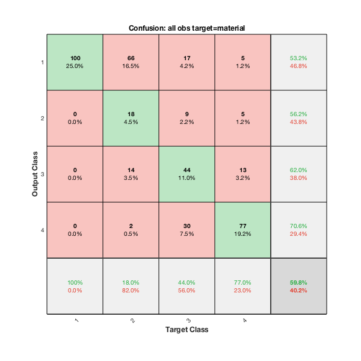 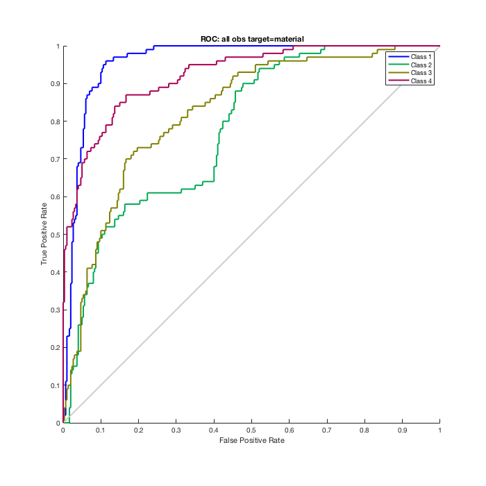
Data set 2
There is a two-layer seafloor. The thickness and material type in the top layer is varying and the bottom material Basalt has fixed parameters [c = 5250 rho = 2700]
load twoLayerSeabed_N=8000.mat
Perform NN pattern recognition with material classes
[x,t] =selectData(signal, parameters, 'all', 'material'); net = patternnet(3); net = train(net,x,t); %view(net) y = net(x); classes = vec2ind(y); figure; plotconfusion(t,y);title(sprintf('Confusion: all obs target=material',j)) figure;plotroc(t,y);title(sprintf('ROC: all obs target=material',j))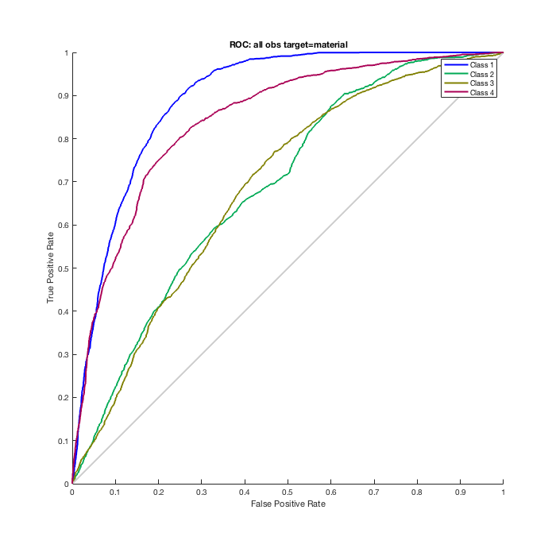
Perform NN pattern recognition with thickness classes
[x,t] =selectData(signal, parameters, 'all', 'thickness'); net = patternnet(3); net = train(net,x,t); %view(net) y = net(x); classes = vec2ind(y); figure; plotconfusion(t,y);title(sprintf('Confusion: all obs target=thickness',j)) figure; plotroc(t,y);title(sprintf('ROC: all obs target=thickness',j))
 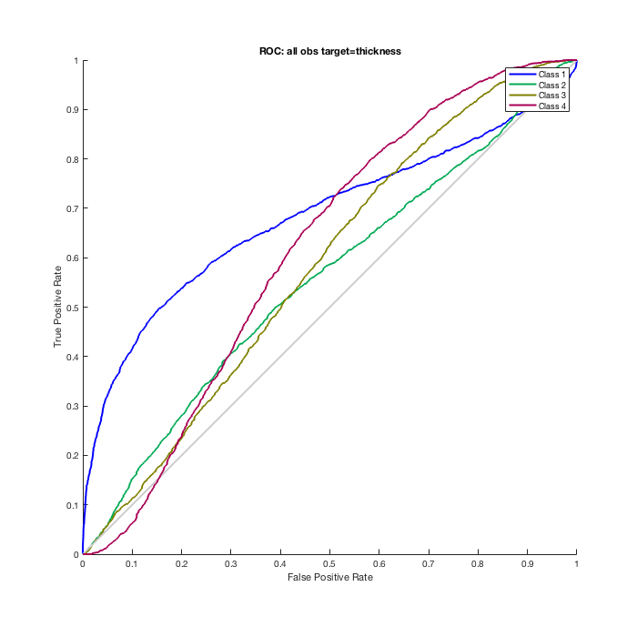
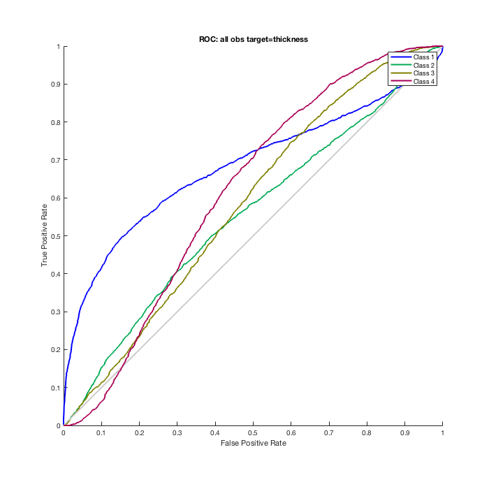 Perform NN pattern recognition with thickness classes, fixed material
for j=1:4 [x,t] =selectData(signal, parameters, sprintf('mat%d',j), 'thickness'); net = patternnet(3); net = train(net,x,t); %view(net) y = net(x); classes = vec2ind(y); figure; plotconfusion(t,y); title(sprintf('Confusion: mat%d target=thickness',j)) figure; plotroc(t,y); title(sprintf('ROC: mat%d target=thickness',j)) end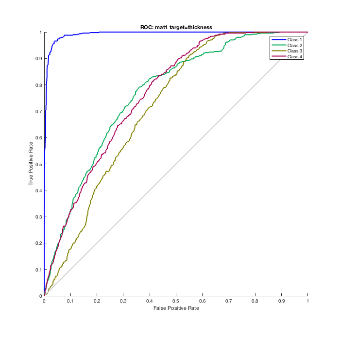 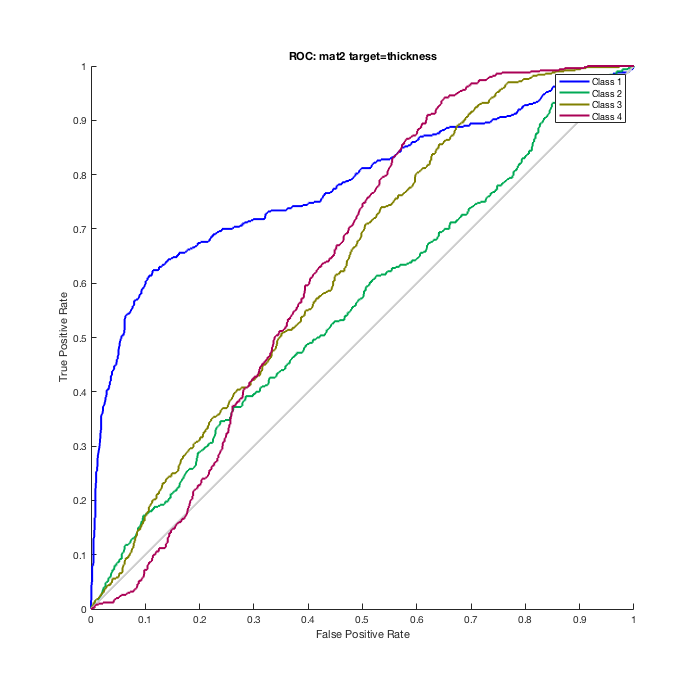 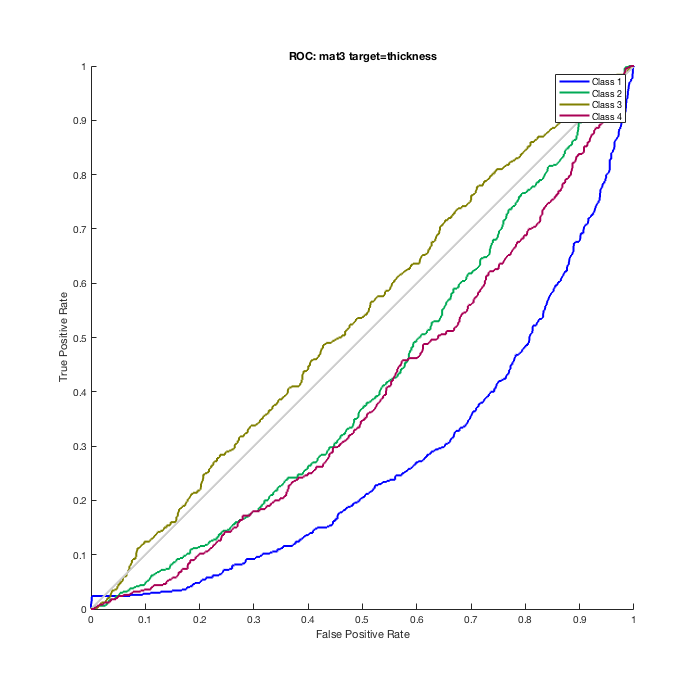 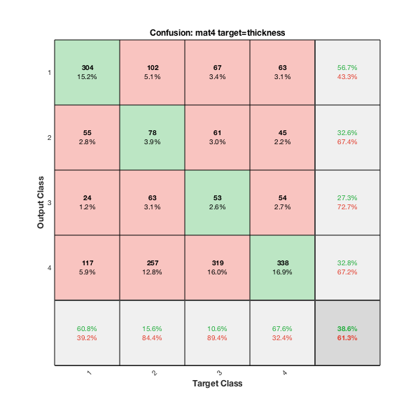 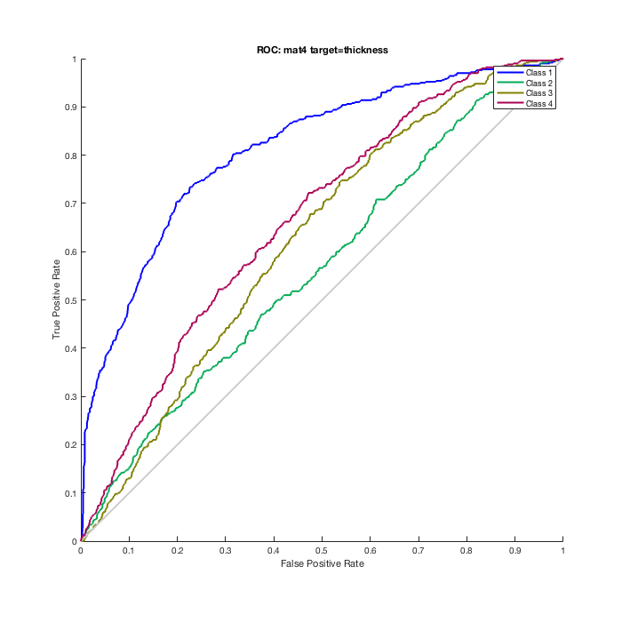
Perform NN pattern recognition with material classes, fixed thickness
for j=1:4 [x,t] =selectData(signal, parameters, sprintf('thc%d',j), 'material'); net = patternnet(3); net = train(net,x,t); %view(net) y = net(x); classes = vec2ind(y); figure; plotconfusion(t,y); title(sprintf('Confusion: mat%d target=thickness',j)) figure; plotroc(t,y); title(sprintf('ROC: mat%d target=thickness',j)) end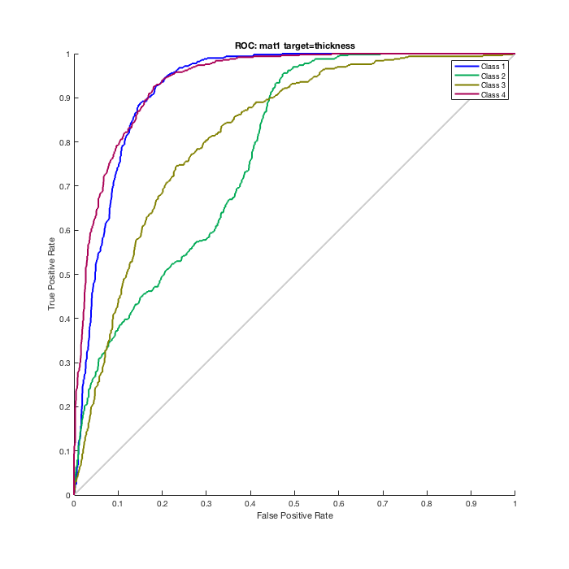 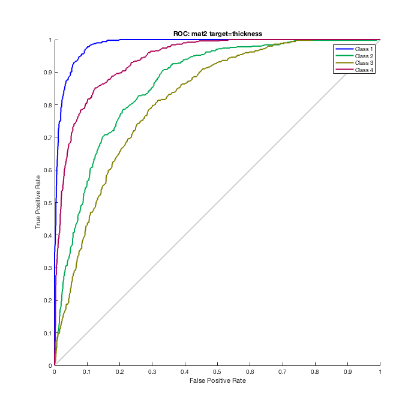 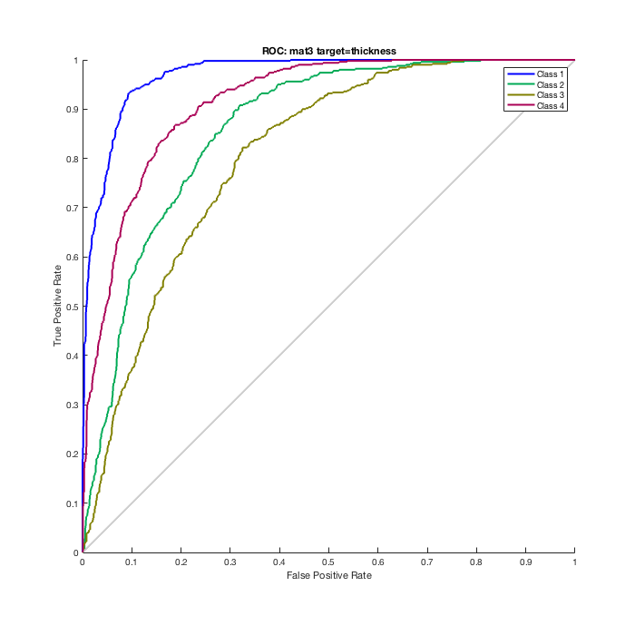 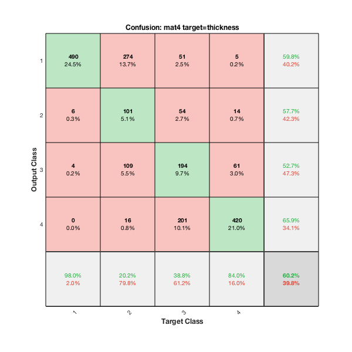 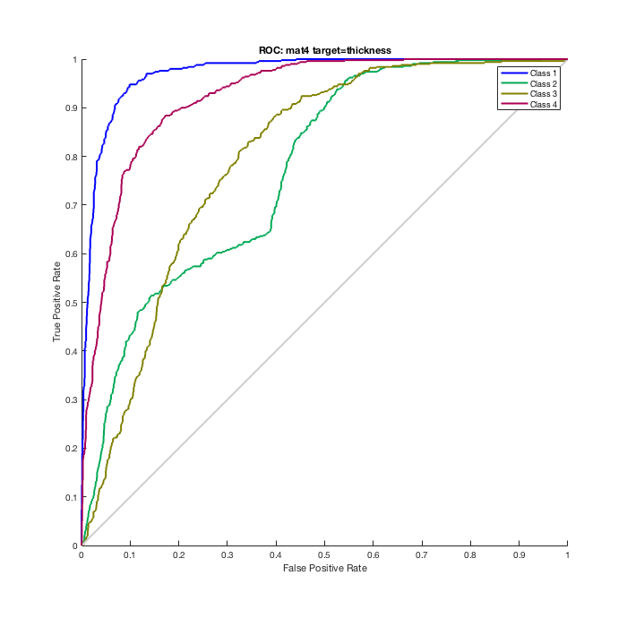
Other approaches: clustering
% Extract the mean and standard deviation of each observation obs=signal; [l w] = size(obs); obs2=zeros(l,2); for j=1:length(obs); obs2(j,1)=mean(obs(j,:)); obs2(j,2)=std(obs(j,:)); end % plot the different material classes figure; hold all; for j=1:4 ind=j:4:l; h=scatter(obs2(ind,1),obs2(ind,2)); end xlabel('mean'); ylabel('stddev'); legend('Clay: (c = 1500, rho = 1500)','Silt: (c = 1575, rho = 1700)','Sand: (c = 1650, rho = 1900)','Gravel: (c = 1800, rho = 2000)'); title('True material classes') % plot the different thickness classes figure; hold all; colormap winter; thc_list=unique(parameters(:,4)); for j=1:4 ind=find(parameters(:, 4) == thc_list(j)); h=scatter(obs2(ind,1),obs2(ind,2),'.'); end xlabel('mean'); ylabel('stddev'); legend('thc = .25','thc = .5','thc = .75','thc = 1'); title('True thickness classes')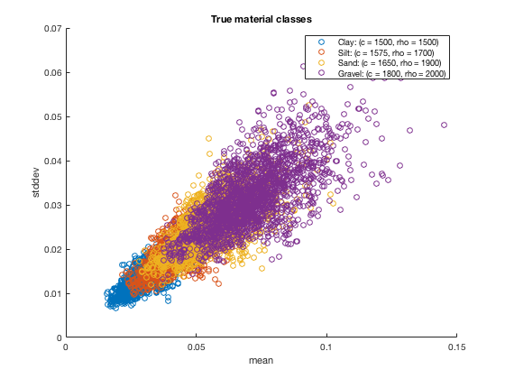 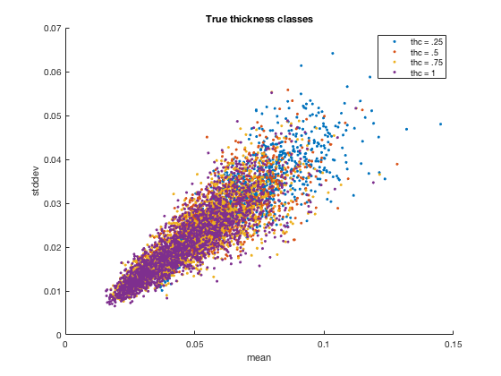
K means clustering
rng(1); idx=kmeans(obs2,4); % figure; hold all; for j= [1 3 2 4 ] ind=idx==j; scatter(obs2(ind,1),obs2(ind,2),'x'); end title('k-means classes') legend('Clay: (c = 1500, rho = 1500)','Silt: (c = 1575, rho = 1700)','Sand: (c = 1650, rho = 1900)','Gravel: (c = 1800, rho = 2000)'); xlabel('mean'); ylabel('stddev'); % k means clustering error true_ind = repmat(1:4, 1, length(obs2)/4)'; figure; hold all; ind_k = [1 3 2 4 ]; err1=0*obs2; for j=1:4 ind = j:4:length(obs2); for k=1:length(ind) if idx(ind(k)) ~= ind_k(j) err1(ind(k),:) = obs2(ind(k),:); end end scatter(err1(ind,1), err1(ind,2)); end title('error k-means classes') xlabel('mean'); ylabel('stddev'); legend('Clay: (c = 1500, rho = 1500)','Silt: (c = 1575, rho = 1700)','Sand: (c = 1650, rho = 1900)','Gravel: (c = 1800, rho = 2000)');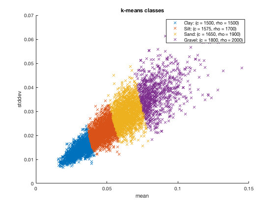 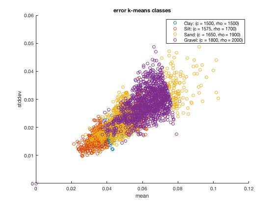